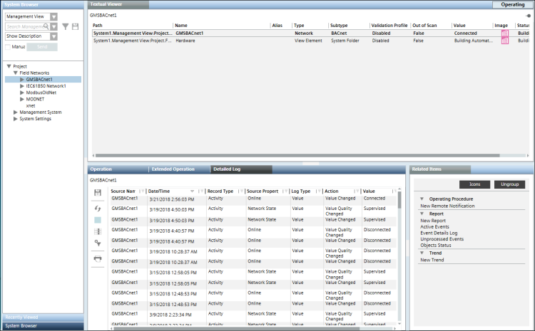

Access and View Data in the Detailed Log
- Complete any of the sub-steps to access and view data in the Detailed Log tab by selecting either of the following:
- (An activity or event type record from the log view) If an activity type record is selected, the latest 100 Activities and Event logs for the selected object display in the Detailed Log tab.
If an event type record is selected, the details of the selected event including the different state changes of the event and the user activities performed in context of the event display in the Detailed Log tab of Event List, Investigative Treatment, and Assisted Treatment windows. - (An object from the System Browser) The latest 100 activities and events for that object display in the Detailed Log tab.
- (An object from any application that supports secondary selection such as Graphics, Trends, Textual Viewer, Reports, or Schedules)
The latest 100 Activities and Event Log records for the object display in the Detailed Log tab. - (An event from the Event List) The details of the selected event including the different state changes of the event and the user activities performed in context of the event are available in the Detailed Log tab of Event List, Investigative Treatment, and Assisted Treatment windows.
